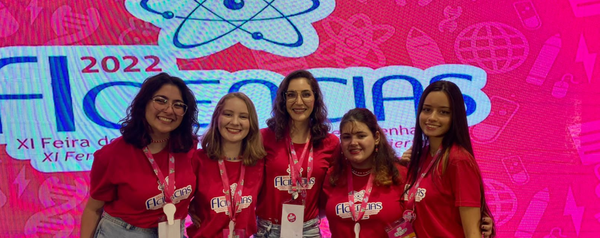

O que é o ?
É o resultado dos avanços de um projeto de extensão denominado Green Go: Gamificação da Identificação de Plantas do IFPR, do Instituto Federal do Paraná Campus Foz do Iguaçu. Ele envolve estudantes de dois cursos, Meio Ambiente e Informática, colaborando na integração na comunidade local entre si e com seu meio.
Nosso objetivo
Buscando conhecer mais a área verde que nos envolve, o projeto desenvolve, em atividades de extensão voltadas para a educação ambiental, um sistema gamificado de identificação da flora arbórea e arborescente (árvores), bem como o conjunto amplo de plantas alimentícias não convencionais (PANCs) e de ervas medicinais do IFPR-Foz.
Onde nós estamos
Av. Araucária, 780 - Vila A, Foz do Iguaçu - PR, 85860-000
Quem somos nós?

Coordenadora da Equipe de Informática
marcela.turim@ifpr.edu.br
Coordenador da Equipe de Meio Ambiente
franco.harlos@ifpr.edu.br
Coordenador da Equipe de Informática
humberto.beneduzzi@ifpr.edu.br
Desenvolvedora Back-end e Modeladora do Sistema
mariaehsb@gmail.com
Designer UI/UX E Documentadora do Sistema
oliveiraalanabrandao@gmail.com
Desenvolvedora Back-end e Modeladora do Sistema
dudabecker@gmail.com
Desenvolvedora Front-end
nicollytavassii@gmail.com
Somos medalhistas!
3º Lugar na categoria Ciências Exatas e da Terra na XI Feira de Inovação das Ciências e Engenharias 2022!